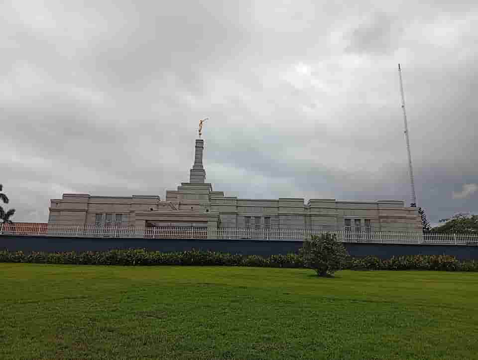
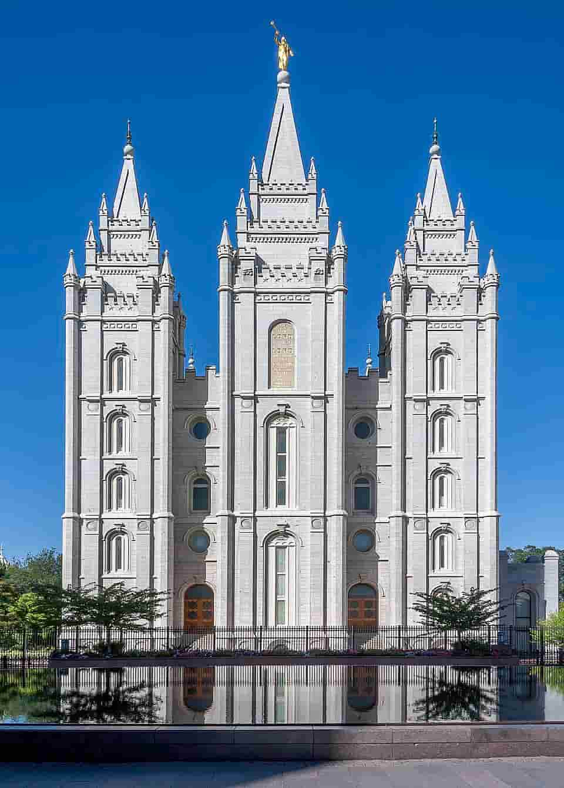
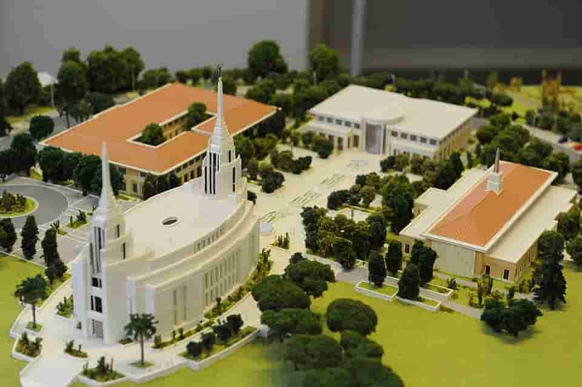
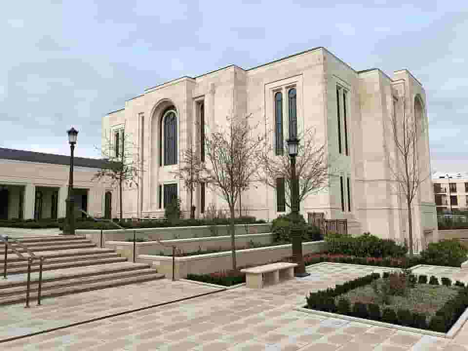

Temple Album
☰
Old
New
Large
Small
Temple Album
Accra Ghana Temple
Aba Nigeria Temple

Abuja Nigeria Temple
Johannesburg South Africa Temple
Lagos Nigeria Temple

Salt Lake Temple
Washington D.C. Temple

Rome Italy Temple

Paris France Temple